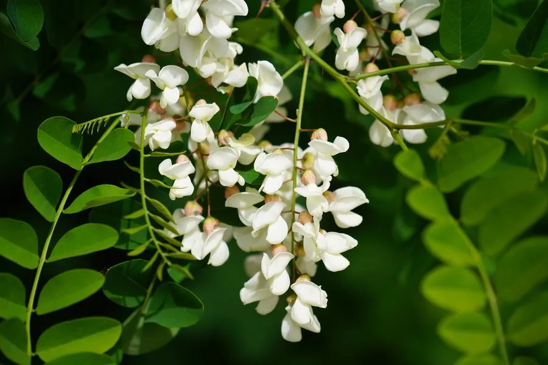

乔木 · 植物界
刺槐 Robinia pseudoacacia

原产北美的落叶乔木，春季开白色槐花、香气浓郁，生长迅速、耐瘠薄，是北方重要的用材与蜜源树种。
- 分类
- 门被子植物门纲木兰纲目豆目科豆科属刺槐属
- 栖息环境
- 海拔 1500 米以下的山地、丘陵与平原，喜光耐寒耐旱耐瘠薄
- 地理分布
- 原产北美洲东部，中国各地引种栽培，华北、东北南部最常见
- 保护级别
- 暂无评估；中国未列入国家重点保护野生植物名录
物种志
刺槐为落叶乔木，高可达 25 m，树皮灰褐色、深纵裂；枝条具托叶刺；奇数羽状复叶，小叶 7–25 枚，卵形至椭圆形，全缘。花期 4–5 月，总状花序腋生、下垂，花白色、芳香，蝶形花冠；荚果扁平、线状长圆形，长 5–10 cm，成熟时褐色，内含 4–10 粒种子。
刺槐原产北美洲东部，中国各地引种栽培，尤以华北、东北南部最常见，喜光、耐寒、耐旱、耐瘠薄，适应性强，生长迅速。木材坚硬、耐腐，可供建筑、矿柱与家具用；花可食，是春季的时令野菜，也是重要的蜜源植物，刺槐蜜是中国四大名蜜之一；树皮可提取栲胶。刺槐耐干旱瘠薄，是荒山绿化与水土保持的常用树种，但根系萌蘖力强，需注意控制。
形态与习性
- 株高可达 25 m，枝条具托叶刺
- 花期4–5 月，花白色芳香
- 果期8–9 月，荚果扁平
- 光照喜光，不耐长期荫蔽
- 水分耐旱，怕积水
- 主要用途建筑与矿柱用材、蜜源、槐花食用、荒山绿化
趣味知识
- 刺槐春季开白色槐花，可食，是北方春季的时令野菜。
- 刺槐是重要的蜜源植物，刺槐蜜是中国四大名蜜之一。
- 刺槐原产北美，因生长快、耐瘠薄，被广泛用于荒山绿化。